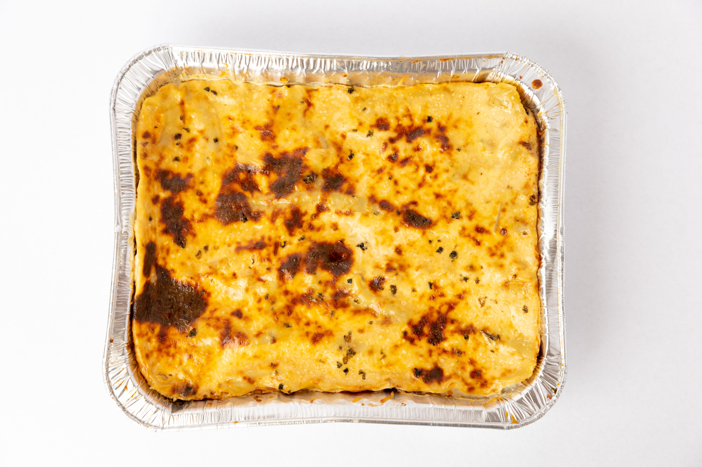

Lasagna

This is a photo of lasagna
Ingredients
- 1 pound ground beef
- 1 onion, chopped
- 2 cloves garlic, minced
- 1 (28-ounce) can crushed tomatoes
- 2 tablespoons tomato paste
- 1 teaspoon dried basil
- 1 teaspoon dried oregano
- Salt and pepper to taste
- 12 lasagna noodles, cooked and drained
- 15 ounces ricotta cheese
- 2 cups shredded mozzarella cheese
- 1/2 cup grated Parmesan cheese
Steps
- Preheat the oven to 375°F (190°C).
- In a large skillet, cook the ground beef, onion, and garlic over medium heat until the meat is browned. Drain excess fat.
- Add crushed tomatoes, tomato paste, basil, oregano, salt, and pepper. Simmer for 15-20 minutes.
- In a separate bowl, mix ricotta cheese with a pinch of salt and pepper.
- In a 9x13 inch baking dish, spread a layer of meat sauce, followed by a layer of noodles, then a layer of ricotta mixture, and a layer of mozzarella cheese. Repeat layers until all ingredients are used, finishing with a layer of meat sauce and mozzarella on top.
- Cover with foil and bake for 25 minutes. Remove foil and bake for an additional 20 minutes until cheese is bubbly and golden.
- Let it cool for 10 minutes before serving.